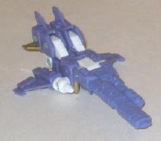
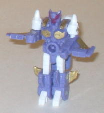
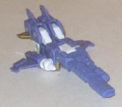
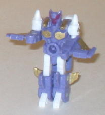
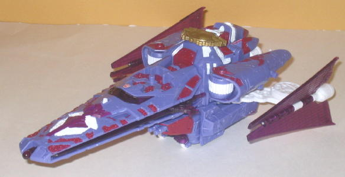
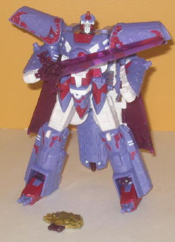

 
Allegiance : Autobot
Size : Mini-Con (comes in a 3-pack with Alpha Trion and Weirdwolf )
Difficulty of Transformation : Very Easy
Color Scheme : White, light purple, and some light metallic gold and dark brick red
Rating : 7.2
(NOTE: Because this is a repaint, this is
not a full-blown review. This mainly covers any changes made to the mold
and the color scheme, and merely compares it to Cybertron Vector Prime
w/ Safeguard. For a review on the mold itself, read the review of Cybertron
Vector Prime w/ Safeguard
here
.)
 Beta
Maxx
Beta
Maxx


Allegiance
: Autobot
Size
: Mini-Con (comes in a 3-pack
with Alpha Trion and
Weirdwolf
)
Difficulty of Transformation
: Very
Easy
Color Scheme
: White, light purple,
and some light metallic gold and dark brick red
Rating
: 7.2
Beta Maxx's color scheme
is primarily the same as Alpha Trion's (a by-product of being part of the
same mold), but with some gold and less red. The light purple and white
go together extremelyt, and Beta Maxx has quite the number of paint apps
on him for a Minicon-- in addition to his large gun being painted, he's
also got quite a few nice gold paint apps on his wings and chest, and his
head is painted a nice dark red that contrasts with the otherwise light
colors and helps to make it stand out more. (And on a side note, LOVE his
name-- it sort of follows Alpha Trion's name in style, and he's a recorder
of data, so... hehheh.)
No mold changes have
been made to Beta Maxx.
 Alpha
Trion
Alpha
Trion


Allegiance
: Autobot
Size
: Voyager (comes in a 3-pack
with Beta Maxx and Weirdwolf)
Difficulty of Transformation
: Easy
Color Scheme
: Light purple, white,
dark red, transparent reddish purple, and some dark brick red, silver,
light red, and dark blue
Rating
: 9.6
Alpha Trion continues
Beta Maxx's really nice color scheme of light purple and white, but given
his size, of course adds a few more colors to the mix. He's got a TON of
dark red paint apps on him that really go incredibly nicely with the light
purple, and it's a rather original color combo, too. Really the impressive
number of paint apps on this toy cannot be overstated, it really just brings
out all the mold detailing so well. The transparent purple used on such
areas as the wings and the sword is also a near-perfect shade (though if
I had to get nit-picky, I'd say they could be slightly less red and more
purple). His Cyber Key is also a nice light gold color like the gold on
Beta Maxx, which works well with the purple.
Of course, what will
be the primary interest to most people is the new Alpha Trion-y headsculpt,
and it's fantastic, one of the best Fun Publications has ever done. The
proportions are perfect and spot-on Alpha Trion, the only real difference
being a shorter robo-beard because of the transformation. He's also got
a lot of paint detailing on him, including two small dots of colors that
aren't anywhere else on the figure-- dark blue for the eyes and light red
on his forehead vent. Little details like that are always neat, I think.
The downside to this new headsculpt, however, is that it's very obvious
in vehicle mode, as it's not as angular as Vector Prime's face and thus
doesn't mesh with the surrounding vehicle mode parts.
Given that both Alpha
Trion's and Beta Maxx's color schemes really stand out and, homage aside,
are just fantastic-looking, it's hard not to highly recommend this set.
Alpha Trion's awesome new head sculpt and the high number of paint apps
are just icing on the cake. Highly recommended, if you can afford 'em.
Review by Beastbot